The world above
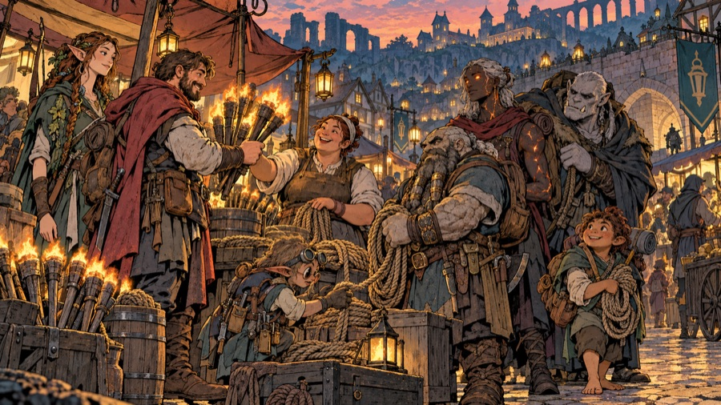
Draft. The game only shows Lanternhollow; everything else here is background that items, monsters and townsfolk can mention.
The Hollowmark
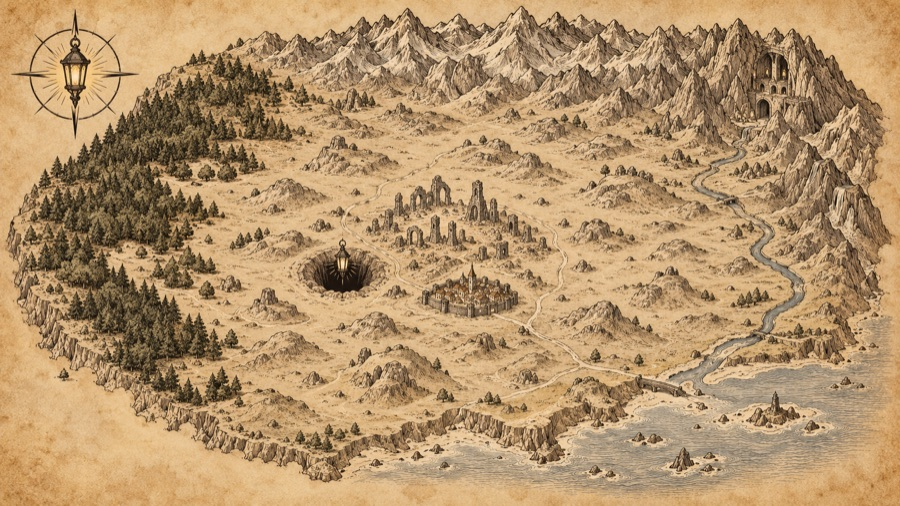
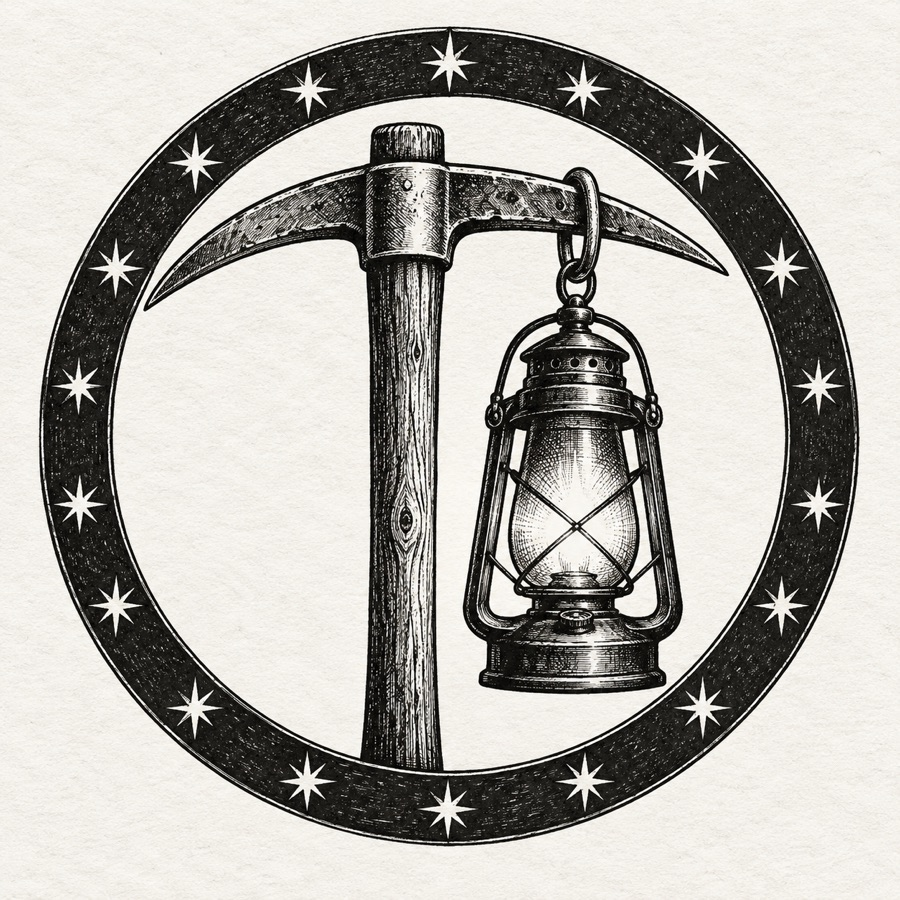
The Hollowmark is a bowl of low, stony hills ringed by higher mountains: the Crag Roots to the north, where the Cragborn live and the giants of the deep families come from, and the long dark line of the Greenroof forest to the west, home of the Sylvan. A cold river, the Tarrow, runs out of the hills to the south and east towards the coast. Under the middle of the bowl lies the Lampway, and over its mouth lie the ruins of Aurenhold and the town of Lanternhollow.
The land is poor for farming. In the old kingdom, people said that was because the Breath had soured it; now they say it is because everyone who can dig would rather dig down.
Lanternhollow
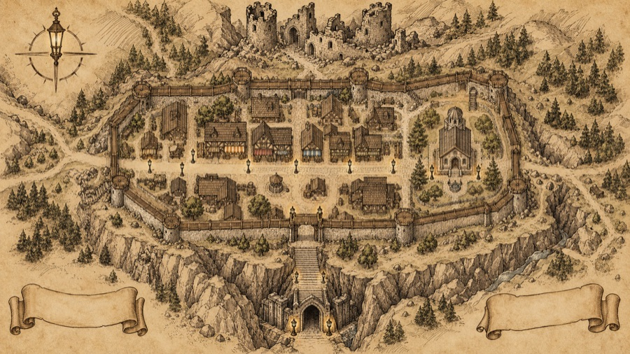
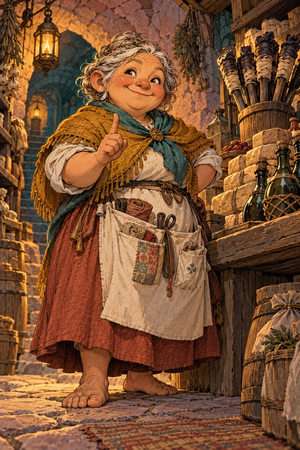
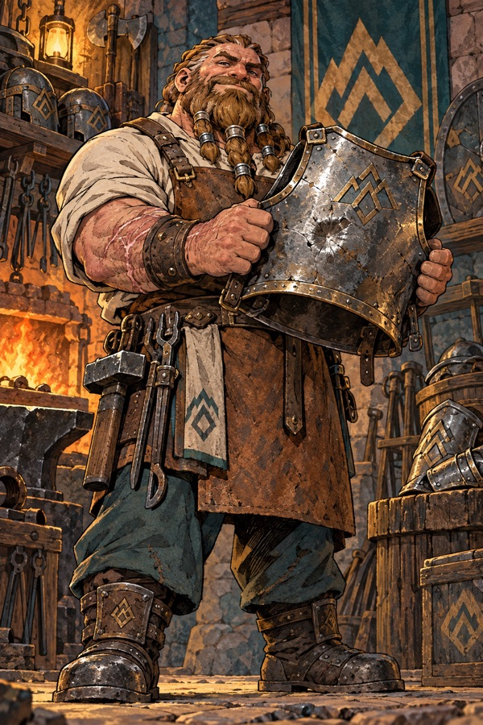
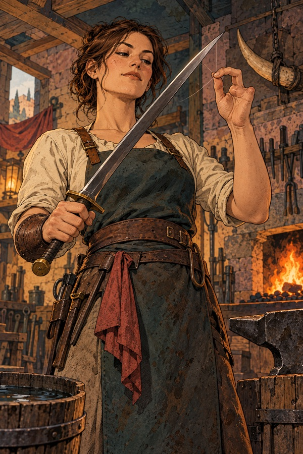
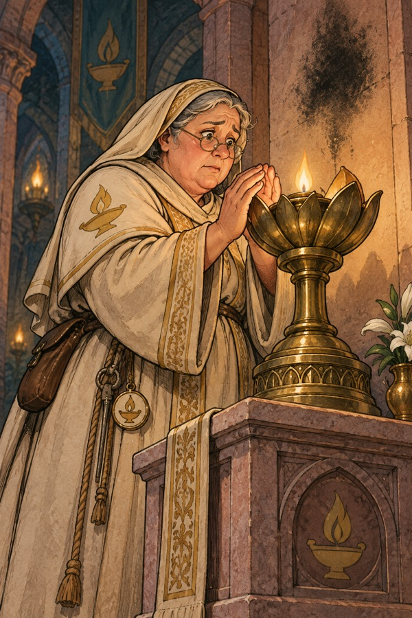
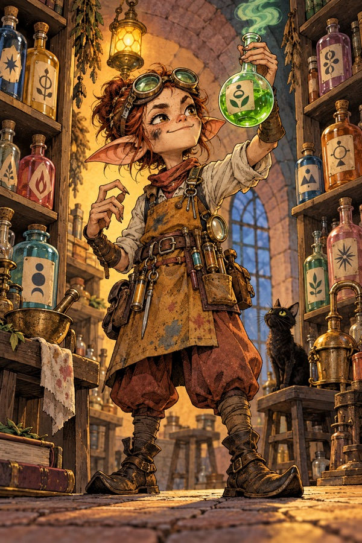
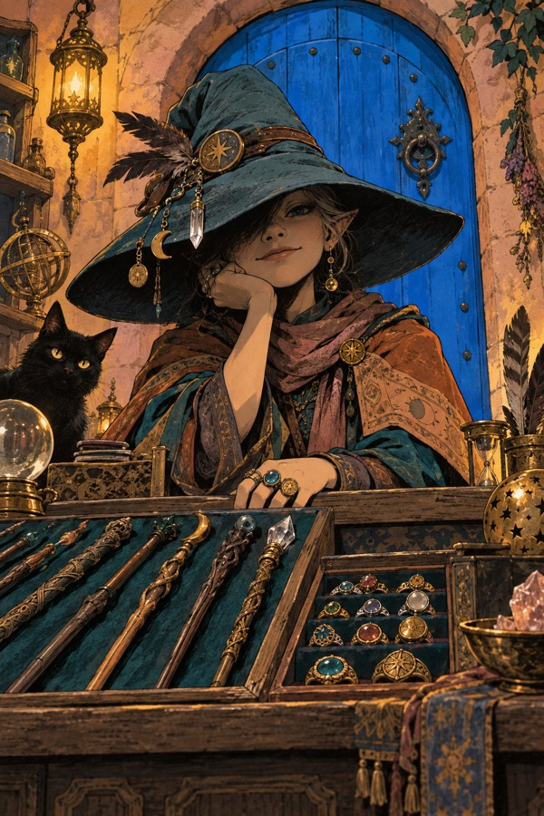
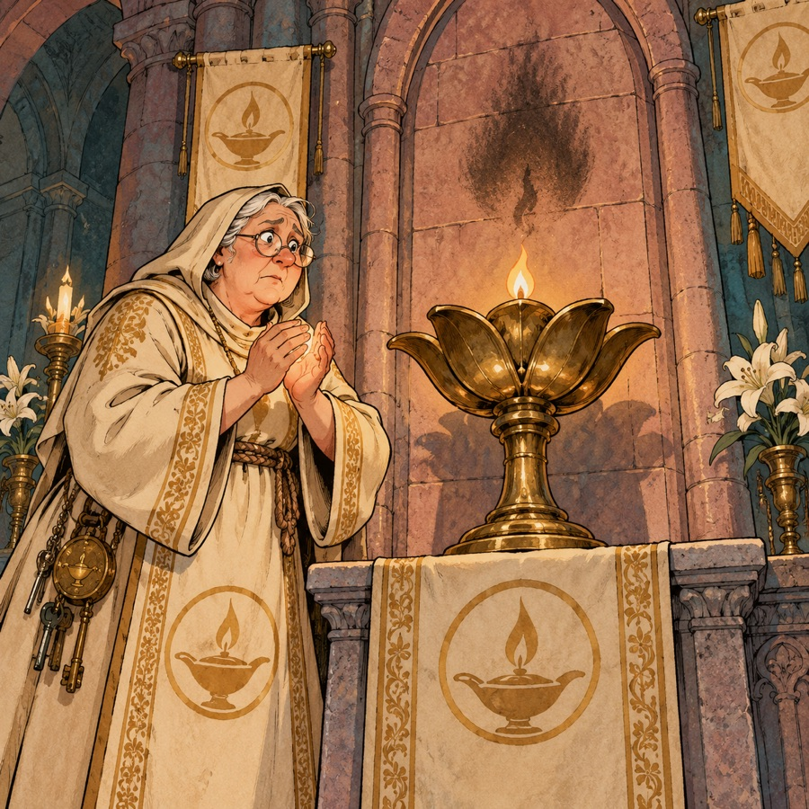
A walled town of a few thousand on the ruins' southern edge, built of old Aurenhold stone and new timber. It exists to supply the delvers and to buy what they bring back. The game's town is its market square: a main street with the six licensed shops, a few houses, lamp posts, and the stairs down to the Hollow Gate.
The lamps. Lanternhollow keeps more lamps than any town its size, and lights them all night. After the Night of Open Doors (612 YH) the council made it law. Lamplighters are paid from the delving licences, and putting out a public lamp is a crime punished like theft. At night the lamp posts and shop doorways are the brightest things in the hills, which is exactly the point.
The shops (the game's six), each with a licensed keeper:
| Shop | Keeper | Notes for the lore |
|---|---|---|
| 1 General Store | Odda the Provisioner | A Burrowfolk grandmother who has outfitted three generations of delvers and remembers which ones came back. Calls everyone "dear". |
| 2 Armoury | Bram Ironside | A Stonekin smith from the Deephall clans. His family's mark is on half the old armour found in the Ring of Stone. |
| 3 Weaponsmith | Kessa Edgewright | A human ex-delver who lost two fingers on the Maul-Wyrm's level and decided she liked forging better. |
| 4 Temple | Sister Ilvane | Senior Keeper of the town temple and the keeper of the Eternal Lamp. The first to notice the Guttering. |
| 5 Alchemist | Thorne Vialkeeper | A Tinkerling chemist. Every bottle is labelled in his own cipher, which is why delvers never know what a potion is until they try it. |
| 6 Magic Shop | Maelis of the Blue Door | The Blue Door has been open since 112 YH and has always had a Maelis behind the counter. Maelis does not discuss this. |
The townsfolk. Wandering peddlers selling bent spoons as relics of Aurenhold; stray mutts who know which delvers drop crusts; revellers celebrating someone's safe return (or someone's estate); cutpurses who would rather rob a delver on the way down than risk the dungeon; dockside brawlers from the Tarrow barges. None of them go below.
Day and night. By day the sun crosses the bowl of hills and the buildings throw long shadows. At night there is faint moonlight and the lamps. Old people say the dark is "thicker" in Lanternhollow than anywhere else, and that is true: Morrowgloom's hunger pulls a little at every light near the Lampway.
Word of Recall. The scroll and the prayer that bring a delver home from the deepest ring they have reached work because of the Eternal Lamp. A Keeper's blessing ties the reader's own small share of the Fire to it, and the Lamp pulls them home, then later back to the same depth. If the Eternal Lamp ever went out, no one could be recalled.
Souls called back. The same thread holds when a delver dies. For a while their share of the Fire hangs between the body and the stars, still tied to the Eternal Lamp, and the Keepers can pull it back to the temple, where the delver wakes on the cold floor beside the Lamp. It costs the temple dear in oil, prayer and old relics, so Sister Ilvane asks a high price in gold, higher for the great and higher every time: each return frays the thread. Once a soul has risen past the Lamp's reach, no one can call it back. In the game: when you die with enough gold, you may pay to wake in the temple.
Resting. No one sleeps well below. The dark leans on a sleeper the way it leans on a lamp, and delvers who try to rest down there wake worse than they lay down. Real rest is for the town, behind its lit walls.
The ruins of Aurenhold

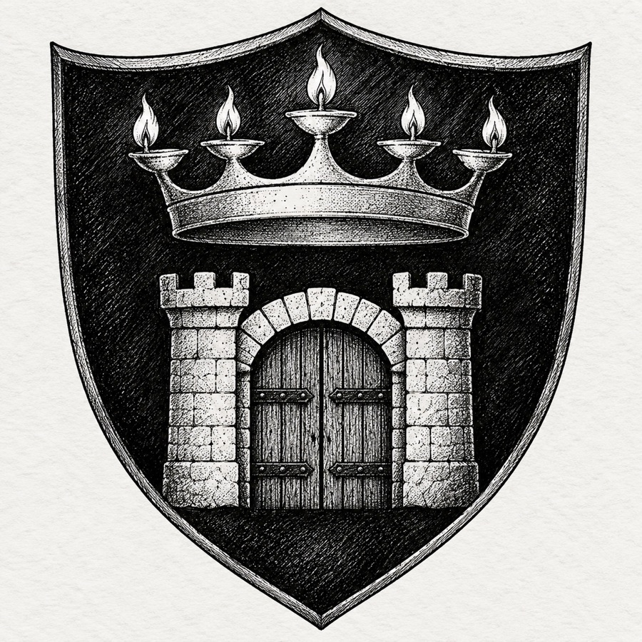
North of the town walls, the old capital is a field of broken towers, sunken streets and lamp-posts with no lamps. The Hollow Gate stands at its heart under a collapsed dome. Most of the ruins were stripped for building stone during the Glow Rush. Delvers who cannot afford a licence sometimes dig in the ruins instead and find old coins, Collegium lecture notes, and the occasional thing that should not be there.
Neighbours
- The Greenroof. The Sylvan forest to the west, older than Aurenhold. The Sylvan keep starlight in their high groves and send their best archers to Lanternhollow in every generation, by an old promise from Starfall's day.
- The Crag Roots. The northern mountains. The Cragborn live along their roots in great stone steads; the hill, frost, fire and storm giants of the deep are their distant cousins, who went down when the Lampway was dug and never came back up.
- The Deephalls. The Stonekin's own halls in the mountains east of the Hollowmark. Their clans built the Lampway's upper rings and still argue about who owes whom for it.
- The Tarrow towns. River towns to the south, mostly human. They buy glow crystals, Lanternhollow lanterns and whatever comes up from the Deep, and they send up food, oil and fortune-seekers in return.
- The coast. Where the human lamplighter Caedra came from. The coastal cities keep a small chapel of the Lamp each and send their failed priests to Lanternhollow, where there is always work.